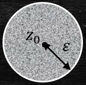

Jonathan Crofts
Nottingham Trent University
A zero of an analytic function $f(z)$ in a domain $D$ is a point $z=z_0$ such that $f(z_0)=0$
A first order zero is called a simple zero
For a second order zero we have \[ f(z_0) = f'(z_0) = 0\quad \text{but}\quad f''(z_0)\neq 0 \] etc.
The function $1+z^2$ has simple zeros at $\pm i$
The function $\left(1-z^4\right)^2$ has second order zeros at $\pm 1$ and $\pm i$
Note, for example, that \[ \left.\frac{\mathrm{d}f}{\mathrm{d}z}\right|_{z_0=i} = \left. -8z^3(1-z^4)\right|_{z_0=i} = 0 \]
But \[ \left.\frac{\mathrm{d}^2f}{\mathrm{d}z^2}\right|_{z_0=i} = \left. 8z^2(7z^4-3)\right|_{z_0=i} \neq 0 \]
The function $e^{z}$ has no zeros
The function $\sin{z}$ has simple zeros at $0, \pm\pi, \pm 2\pi,\ldots$ whilst the function $\sin^2(z)$ has second order zeros at the same points
Consider the function $f(z) = \sin^2(z)$.
Differentiating gives \[ \begin{align*} f'(z) &= 2\sin(z)\cos(z)\\ f''(z)&= 2\left(\cos^2(z)-\sin^2(z)\right)\\ \end{align*} \]
and so clearly \[ f(\pm n\pi) = f'(\pm n\pi) = 0 \quad n\in\mathbb{Z} \] since $\sin(\pm n\pi)=0$
Also, since
\[
f''(\pm n\pi) \neq 0 \quad n\in\mathbb{Z}
\]
we have that $\pm n\pi$ are second order zeros of $\sin^2(z)$ for each $n\in\mathbb{Z}$
Before moving onto complex integration we need to consider singularities of complex valued functions
Recall that a function is analytic at the point $z_0$ if it is differentiable in a neighbourhood of $z_0$
The picture is as follows
Show that the function $\displaystyle f(z)= u(x,y)+iv(x,y)=x^2-iy^2$ is nowhere analytic in the complex plane
Solution
We begin by computing the CR equations:
\[ \begin{align*} u_x&=v_y \implies 2x=-2y\\ v_x&=-u_y \implies 0=0 \end{align*} \]Thus the function $f$ is only differentiable at points lying on the line $x=-y$
However, to be analytic at a point $z_0$, there must exist a neighbourhood of $z_0$ at all points of which $f'(z)$ exists.
Clearly any neighbourhood of a point on the line $x=-y$ will contain points off of that line, for which $f'(z)$ does not exist
Consider the function
\[ f(z) = \frac{2z+1}{z^2+3z+2} \]The denominator can be written as $(z+1)(z+2)$ and so the function is not defined at these points
In particular, it is not analytic at these points
Another way of thinking about this is that $z_0$ is an order $n$ pole if
\[ \left(z-z_0\right)^n f(z)~ \text{ is analytic, but } ~\left(z-z_0\right)^{n-1} f(z) \]is not
Consider the previous example
\[ f(z) = \frac{2z+1}{z^2+3z+2} \]Then
\[ F(z) = 1/f(z) = \frac{(z+1)(z+2)}{2z+1} \]has zeros at $z_{1,2}=-1,-2$, that is $F(-1)=F(-2)=0$
What are the order of these poles?
To determine the order of the poles we could determine the order of the zeros of $F(z)=1/f(z)$
Alternatively, we can use the second method
Firstly, note that
\[ (z+1)^1f(z) = \frac{2z+1}{z+2} \]is analytic (well-defined and "differentiable") at $z_1=-1$
Where as
\[
(z+1)^0f(z) = \frac{2z+1}{(z+1)(z+2)}
\]
is not.
Thus $z_1=-1$ is an order 1 pole
A similar analysis shows that $z_2=-2$ is also an order 1 pole
The function $\displaystyle f(z) = \frac{\sin(z)}{z}$ has a removable singularity at $z_0=0$.
This follows as $f$ exists $\forall z\neq 0$ and
\[ \lim_{z\to 0} f(z) = \lim_{z\to 0}\left[\frac{1}{z}\left(z-\frac{z^3}{3!}+\frac{z^5}{5!}-\cdots\right)\right] = 1 \]Both of the previous singuarities are known as isolated singularities
$\bullet ~f$ has poles at $z=i, -2~$ (order 1 and 2, respectively)
$\bullet ~$ These singularities are clearly isolated
Show that the function $\displaystyle f(z) = \frac{1}{\sin\left(z^{-1}\right)}$ has an essential singularity at $z=0$
Solution
This function has two types of singularities: isolated singularities whenever the denominator equals zero, i.e. \[\color{red}{\boxed{\color{white}{ \sin\left(z^{-1}\right) = 0 \implies z^{-1} = n\pi \quad n\in\mathbb{Z}}}} \] and an essential singularity at $z=0$.To see this, note that each of the isolated singuarities can be enclosed in an $\epsilon$-disc containing no other singularities; just set \[ \epsilon = \frac{1}{2}|z_n-z_{n+1}| = \frac{1}{2}\frac{1}{\pi n(n+1)} \]
To see that $z^*=0$ is an essential singularlty, consider the plot below and try to choose a value of $\epsilon$ such that the $\epsilon$-neighbourhood centered at zero, $D_\epsilon$ say, contains no singularities other than $z^*=0$.
No matter the choice of $\epsilon$ we can always choose $m\in\mathbb{Z}$ large enough so that
\[ z_m = \frac{1}{m\pi} \]lies within the disc, $D_\epsilon$.
Moreover, infinitely many such singularities are enclosed within $D_\epsilon$ for any choice of $\epsilon$, since $z_n\in D_\epsilon$ for $n>m$
It follows that we cannot isolate the point $z^*=0$ and so it must be an essential singularity